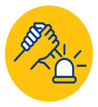

Turkcell’den
Afet Tedbirleri
Türkiye’nin Turkcell’i olarak iyi günde olduğu gibi kötü günlerde de insanımızın yanında olmayı görev bildik.
Bu yüzden afet anında teknolojilerimizle hızla aksiyon alıyor, yaralarımızı birlikte sarıyoruz.
Acil İletişim Paketi
Afet bölgelerindeki kullanıcılarımızdan borcu nedeniyle hattı kapalı ya da kısıtlı hatlarını acil iletişim ihtiyaçlarını karşılamak için kullanıma açıyoruz. Bölgedeki kullanıcılarımıza ücretsiz görüşme için dakika, SMS ve internet içeren “Acil İletişim Paketi” ile arama kurtarma ekiplerine “Kahraman Paketi” ve “Kurtaran Paketi” tanımlıyoruz.

Kesintisiz İletişim
Afet durumunda oluşacak yüksek ses trafiğini karşılamak için şebekemizi en yeni, yüksek kapasiteli ve dayanıklı teknolojilerle yönetiyoruz. Afet bölgelerinde zarar gören baz istasyonlarımızı hızla hizmete alıyoruz. Şebekemizi güçlendirmek için mobil baz istasyonları kuruyoruz, jeneratörler ve uydu hizmeti verebilen mobil araçlarla kesintisiz iletişim sağlıyoruz.
Afet Sonrası Destek
Arama kurtarma ekiplerine ve afet sonrası toplanma alanlarına sabit internet hizmeti
ve mobil şarj istasyonları sağlıyoruz.

Fatura Dondurma ve İptal
Afet bölgelerinde ev internetini ücretsiz olarak dondurma, nakil etme veya iptal
olanağı sunuyoruz. İptal edilen modem ücretlerini siliyoruz.